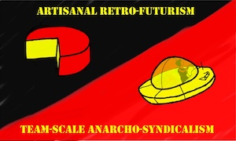

We believe Agile software development is being dumbed down, commodified, and is losing its spirit. We seek to replace its current name with one having two virtues: first, that it capture more exactly the attitudes originally behind Agile; second, that it be obscure enough that no one will assume they already know what it means and that—amazingly enough!—they are already doing it. Read more...
Flaunt your support with a laptop sticker 
"I found @marick's keynote at #agileroots the best talk I've heard in 10 years. totally personal of course. Lots of new news to me" — Alistair Cockburn
"#agileroots ARxTA talk from @marick was FANTASTIC. Reflected my observations & wishes perfectly." — James Shore
(There's also a version from Future Ruby for those who prefer their content sourced Canadian.)